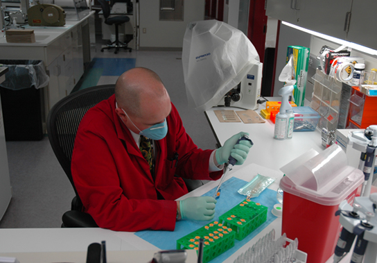

Describe the levels of organization among living things
Recognize and interpret a phylogenetic tree
List examples of different sub disciplines in biology
Biology is the science that studies life, but what exactly is life? This may sound like a silly question with an obvious response, but it is not always easy to define life. For example, a branch of biology called virology studies viruses, which exhibit some of the characteristics of living entities but lack others. It turns out that although viruses can attack living organisms, cause diseases, and even reproduce, they do not meet the criteria that biologists use to define life. Consequently, virologists are not biologists, strictly speaking. Similarly, some biologists study the early molecular evolution that gave rise to life; since the events that preceded life are not biological events, these scientists are also excluded from biology in the strict sense of the term.
From its earliest beginnings, biology has wrestled with three questions: What are the shared properties that make something “alive”? And once we know something is alive, how do we find meaningful levels of organization in its structure? And, finally, when faced with the remarkable diversity of life, how do we organize the different kinds of organisms so that we can better understand them? As new organisms are discovered every day, biologists continue to seek answers to these and other questions.
Properties of Life
All living organisms share several key characteristics or functions: order, sensitivity or response to the environment, reproduction, adaptation, growth and development, regulation, homeostasis, energy processing, and evolution. When viewed together, these nine characteristics serve to define life.
Order
A toad represents a highly organized structure consisting of cells, tissues, organs, and organ systems. (credit: “Ivengo”/Wikimedia Commons)
Organisms are highly organized, coordinated structures that consist of one or more cells. Even very simple, single-celled organisms are remarkably complex: inside each cell, atoms make up molecules; these in turn make up cell organelles and other cellular inclusions. In multicellular organisms ([link]), similar cells form tissues. Tissues, in turn, collaborate to create organs (body structures with a distinct function). Organs work together to form organ systems.
Sensitivity or Response to Stimuli
The leaves of this sensitive plant (Mimosa pudica) will instantly droop and fold when touched. After a few minutes, the plant returns to normal. (credit: Alex Lomas)
Organisms respond to diverse stimuli. For example, plants can bend toward a source of light, climb on fences and walls, or respond to touch ([link]). Even tiny bacteria can move toward or away from chemicals (a process called chemotaxis) or light (phototaxis). Movement toward a stimulus is considered a positive response, while movement away from a stimulus is considered a negative response.
Link to Learning
Watch this video to see how plants respond to a stimulus—from opening to light, to wrapping a tendril around a branch, to capturing prey.
Reproduction
Single-celled organisms reproduce by first duplicating their DNA, and then dividing it equally as the cell prepares to divide to form two new cells. Multicellular organisms often produce specialized reproductive germline cells that will form new individuals. When reproduction occurs, genes containing DNA are passed along to an organism’s offspring. These genes ensure that the offspring will belong to the same species and will have similar characteristics, such as size and shape.
Growth and Development
Organisms grow and develop following specific instructions coded for by their genes. These genes provide instructions that will direct cellular growth and development, ensuring that a species’ young ([link]) will grow up to exhibit many of the same characteristics as its parents.
Although no two look alike, these kittens have inherited genes from both parents and share many of the same characteristics. (credit: Rocky Mountain Feline Rescue)
Regulation
Even the smallest organisms are complex and require multiple regulatory mechanisms to coordinate internal functions, respond to stimuli, and cope with environmental stresses. Two examples of internal functions regulated in an organism are nutrient transport and blood flow. Organs (groups of tissues working together) perform specific functions, such as carrying oxygen throughout the body, removing wastes, delivering nutrients to every cell, and cooling the body.
Homeostasis
Polar bears (Ursus maritimus) and other mammals living in ice-covered regions maintain their body temperature by generating heat and reducing heat loss through thick fur and a dense layer of fat under their skin. (credit: “longhorndave”/Flickr)
In order to function properly, cells need to have appropriate conditions such as proper temperature, pH, and appropriate concentration of diverse chemicals. These conditions may, however, change from one moment to the next. Organisms are able to maintain internal conditions within a narrow range almost constantly, despite environmental changes, through homeostasis (literally, “steady state”)—the ability of an organism to maintain constant internal conditions. For example, an organism needs to regulate body temperature through a process known as thermoregulation. Organisms that live in cold climates, such as the polar bear ([link]), have body structures that help them withstand low temperatures and conserve body heat. Structures that aid in this type of insulation include fur, feathers, blubber, and fat. In hot climates, organisms have methods (such as perspiration in humans or panting in dogs) that help them to shed excess body heat.
Energy Processing
The California condor (Gymnogyps californianus) uses chemical energy derived from food to power flight. California condors are an endangered species; this bird has a wing tag that helps biologists identify the individual. (credit: Pacific Southwest Region U.S. Fish and Wildlife Service)
All organisms use a source of energy for their metabolic activities. Some organisms capture energy from the sun and convert it into chemical energy in food; others use chemical energy in molecules they take in as food ([link]).
Levels of Organization of Living Things
Living things are highly organized and structured, following a hierarchy that can be examined on a scale from small to large. The atom is the smallest and most fundamental unit of matter. It consists of a nucleus surrounded by electrons. Atoms form molecules. A molecule is a chemical structure consisting of at least two atoms held together by one or more chemical bonds. Many molecules that are biologically important are macromolecules, large molecules that are typically formed by polymerization (a polymer is a large molecule that is made by combining smaller units called monomers, which are simpler than macromolecules). An example of a macromolecule is deoxyribonucleic acid (DNA) ([link]), which contains the instructions for the structure and functioning of all living organisms.
All molecules, including this DNA molecule, are composed of atoms. (credit: “brian0918”/Wikimedia Commons)
Link to Learning
Watch this video that animates the three-dimensional structure of the DNA molecule shown in [link].
Some cells contain aggregates of macromolecules surrounded by membranes; these are called organelles. Organelles are small structures that exist within cells. Examples of organelles include mitochondria and chloroplasts, which carry out indispensable functions: mitochondria produce energy to power the cell, while chloroplasts enable green plants to utilize the energy in sunlight to make sugars. All living things are made of cells; the cell itself is the smallest fundamental unit of structure and function in living organisms. (This requirement is why viruses are not considered living: they are not made of cells. To make new viruses, they have to invade and hijack the reproductive mechanism of a living cell; only then can they obtain the materials they need to reproduce.) Some organisms consist of a single cell and others are multicellular. Cells are classified as prokaryotic or eukaryotic. Prokaryotes are single-celled or colonial organisms that do not have membrane-bound nuclei; in contrast, the cells of eukaryotes do have membrane-bound organelles and a membrane-bound nucleus.
In larger organisms, cells combine to make tissues, which are groups of similar cells carrying out similar or related functions. Organs are collections of tissues grouped together performing a common function. Organs are present not only in animals but also in plants. An organ system is a higher level of organization that consists of functionally related organs. Mammals have many organ systems. For instance, the circulatory system transports blood through the body and to and from the lungs; it includes organs such as the heart and blood vessels. Organisms are individual living entities. For example, each tree in a forest is an organism. Single-celled prokaryotes and single-celled eukaryotes are also considered organisms and are typically referred to as microorganisms.
All the individuals of a species living within a specific area are collectively called a population. For example, a forest may include many pine trees. All of these pine trees represent the population of pine trees in this forest. Different populations may live in the same specific area. For example, the forest with the pine trees includes populations of flowering plants and also insects and microbial populations. A community is the sum of populations inhabiting a particular area. For instance, all of the trees, flowers, insects, and other populations in a forest form the forest’s community. The forest itself is an ecosystem. An ecosystem consists of all the living things in a particular area together with the abiotic, non-living parts of that environment such as nitrogen in the soil or rain water. At the highest level of organization ([link]), the biosphere is the collection of all ecosystems, and it represents the zones of life on earth. It includes land, water, and even the atmosphere to a certain extent.
Art Connection
The biological levels of organization of living things are shown. From a single organelle to the entire biosphere, living organisms are parts of a highly structured hierarchy. (credit “organelles”: modification of work by Umberto Salvagnin; credit “cells”: modification of work by Bruce Wetzel, Harry Schaefer/ National Cancer Institute; credit “tissues”: modification of work by Kilbad; Fama Clamosa; Mikael Häggström; credit “organs”: modification of work by Mariana Ruiz Villareal; credit “organisms”: modification of work by "Crystal"/Flickr; credit “ecosystems”: modification of work by US Fish and Wildlife Service Headquarters; credit “biosphere”: modification of work by NASA)
Which of the following statements is false?
Tissues exist within organs which exist within organ systems.
Communities exist within populations which exist within ecosystems.
Organelles exist within cells which exist within tissues.
Communities exist within ecosystems which exist in the biosphere.
The Diversity of Life
The fact that biology, as a science, has such a broad scope has to do with the tremendous diversity of life on earth. The source of this diversity is evolution, the process of gradual change during which new species arise from older species. Evolutionary biologists study the evolution of living things in everything from the microscopic world to ecosystems.
The evolution of various life forms on Earth can be summarized in a phylogenetic tree ([link]). A phylogenetic tree is a diagram showing the evolutionary relationships among biological species based on similarities and differences in genetic or physical traits or both. A phylogenetic tree is composed of nodes and branches. The internal nodes represent ancestors and are points in evolution when, based on scientific evidence, an ancestor is thought to have diverged to form two new species. The length of each branch is proportional to the time elapsed since the split.
This phylogenetic tree was constructed by microbiologist Carl Woese using data obtained from sequencing ribosomal RNA genes. The tree shows the separation of living organisms into three domains: Bacteria, Archaea, and Eukarya. Bacteria and Archaea are prokaryotes, single-celled organisms lacking intracellular organelles. (credit: Eric Gaba; NASA Astrobiology Institute)
Evolution Connection
Carl Woese and the Phylogenetic TreeIn the past, biologists grouped living organisms into five kingdoms: animals, plants, fungi, protists, and bacteria. The organizational scheme was based mainly on physical features, as opposed to physiology, biochemistry, or molecular biology, all of which are used by modern systematics. The pioneering work of American microbiologist Carl Woese in the early 1970s has shown, however, that life on Earth has evolved along three lineages, now called domains—Bacteria, Archaea, and Eukarya. The first two are prokaryotic cells with microbes that lack membrane-enclosed nuclei and organelles. The third domain contains the eukaryotes and includes unicellular microorganisms together with the four original kingdoms (excluding bacteria). Woese defined Archaea as a new domain, and this resulted in a new taxonomic tree ([link]). Many organisms belonging to the Archaea domain live under extreme conditions and are called extremophiles. To construct his tree, Woese used genetic relationships rather than similarities based on morphology (shape).
Woese’s tree was constructed from comparative sequencing of the genes that are universally distributed, present in every organism, and conserved (meaning that these genes have remained essentially unchanged throughout evolution). Woese’s approach was revolutionary because comparisons of physical features are insufficient to differentiate between the prokaryotes that appear fairly similar in spite of their tremendous biochemical diversity and genetic variability ([link]). The comparison of homologous DNA and RNA sequences provided Woese with a sensitive device that revealed the extensive variability of prokaryotes, and which justified the separation of the prokaryotes into two domains: bacteria and archaea.
These images represent different domains. The (a) bacteria in this micrograph belong to Domain Bacteria, while the (b) extremophiles (not visible) living in this hot vent belong to Domain Archaea. Both the (c) sunflower and (d) lion are part of Domain Eukarya. (credit a: modification of work by Drew March; credit b: modification of work by Steve Jurvetson; credit c: modification of work by Michael Arrighi; credit d: modification of work by Leszek Leszcynski)
Branches of Biological Study
The scope of biology is broad and therefore contains many branches and subdisciplines. Biologists may pursue one of those subdisciplines and work in a more focused field. For instance, molecular biology and biochemistry study biological processes at the molecular and chemical level, including interactions among molecules such as DNA, RNA, and proteins, as well as the way they are regulated. Microbiology, the study of microorganisms, is the study of the structure and function of single-celled organisms. It is quite a broad branch itself, and depending on the subject of study, there are also microbial physiologists, ecologists, and geneticists, among others.
Career Connection
Forensic Scientist
Forensic science is the application of science to answer questions related to the law. Biologists as well as chemists and biochemists can be forensic scientists. Forensic scientists provide scientific evidence for use in courts, and their job involves examining trace materials associated with crimes. Interest in forensic science has increased in the last few years, possibly because of popular television shows that feature forensic scientists on the job. Also, the development of molecular techniques and the establishment of DNA databases have expanded the types of work that forensic scientists can do. Their job activities are primarily related to crimes against people such as murder, rape, and assault. Their work involves analyzing samples such as hair, blood, and other body fluids and also processing DNA ([link]) found in many different environments and materials. Forensic scientists also analyze other biological evidence left at crime scenes, such as insect larvae or pollen grains. Students who want to pursue careers in forensic science will most likely be required to take chemistry and biology courses as well as some intensive math courses.
This forensic scientist works in a DNA extraction room at the U.S. Army Criminal Investigation Laboratory at Fort Gillem, GA. (credit: United States Army CID Command Public Affairs)

Another field of biological study, neurobiology, studies the biology of the nervous system, and although it is considered a branch of biology, it is also recognized as an interdisciplinary field of study known as neuroscience. Because of its interdisciplinary nature, this subdiscipline studies different functions of the nervous system using molecular, cellular, developmental, medical, and computational approaches.
Researchers work on excavating dinosaur fossils at a site in Castellón, Spain. (credit: Mario Modesto)
Paleontology, another branch of biology, uses fossils to study life’s history ([link]). Zoology and botany are the study of animals and plants, respectively. Biologists can also specialize as biotechnologists, ecologists, or physiologists, to name just a few areas. This is just a small sample of the many fields that biologists can pursue.
Biology is the culmination of the achievements of the natural sciences from their inception to today. Excitingly, it is the cradle of emerging sciences, such as the biology of brain activity, genetic engineering of custom organisms, and the biology of evolution that uses the laboratory tools of molecular biology to retrace the earliest stages of life on earth. A scan of news headlines—whether reporting on immunizations, a newly discovered species, sports doping, or a genetically-modified food—demonstrates the way biology is active in and important to our everyday world.
Section Summary
Biology is the science of life. All living organisms share several key properties such as order, sensitivity or response to stimuli, reproduction, growth and development, regulation, homeostasis, and energy processing. Living things are highly organized parts of a hierarchy that includes atoms, molecules, organelles, cells, tissues, organs, and organ systems. Organisms, in turn, are grouped as populations, communities, ecosystems, and the biosphere. The great diversity of life today evolved from less-diverse ancestral organisms over billions of years. A diagram called a phylogenetic tree can be used to show evolutionary relationships among organisms.
Biology is very broad and includes many branches and subdisciplines. Examples include molecular biology, microbiology, neurobiology, zoology, and botany, among others.
Art Connections
[link] Which of the following statements is false?
Tissues exist within organs which exist within organ systems.
Communities exist within populations which exist within ecosystems.
Organelles exist within cells which exist within tissues.
Communities exist within ecosystems which exist in the biosphere.
[link] Communities exist within populations which exist within ecosystems.
Review Questions
The smallest unit of biological structure that meets the functional requirements of “living” is the ________.
organ
organelle
cell
macromolecule
C
Viruses are not considered living because they ________.
are not made of cells
lack cell nuclei
do not contain DNA or RNA
cannot reproduce
A
The presence of a membrane-enclosed nucleus is a characteristic of ________.
prokaryotic cells
eukaryotic cells
living organisms
bacteria
B
A group of individuals of the same species living in the same area is called a(n) ________.
family
community
population
ecosystem
C
Which of the following sequences represents the hierarchy of biological organization from the most inclusive to the least complex level?
organelle, tissue, biosphere, ecosystem, population
organ, organism, tissue, organelle, molecule
organism, community, biosphere, molecule, tissue, organ
Where in a phylogenetic tree would you expect to find the organism that had evolved most recently?
at the base
within the branches
at the nodes
at the branch tips
D
Free Response
Select two items that biologists agree are necessary in order to consider an organism “alive.” For each, give an example of a non-living object that otherwise fits the definition of “alive,”
Answers will vary. Layers of sedimentary rock have order but are not alive. Technology is capable of regulation but is not, of itself, alive.
Consider the levels of organization of the biological world, and place each of these items in order from smallest level of organization to most encompassing: skin cell, elephant, water molecule, planet Earth, tropical rainforest, hydrogen atom, wolf pack, liver.
Smallest level of organization to largest: hydrogen atom, water molecule, skin cell, liver, elephant, wolf pack, tropical rainforest, planet Earth
You go for a long walk on a hot day. Give an example of a way in which homeostasis keeps your body healthy.
During your walk, you may begin to perspire, which cools your body and helps your body to maintain a constant internal temperature. You might also become thirsty and pause long enough for a cool drink, which will help to restore the water lost during perspiration.
Using examples, explain how biology can be studied from a microscopic approach to a global approach.
Researchers can approach biology from the smallest to the largest, and everything in between. For instance, an ecologist may study a population of individuals, the population’s community, the community’s ecosystem, and the ecosystem’s part in the biosphere. When studying an individual organism, a biologist could examine the cell and its organelles, the tissues that the cells make up, the organs and their respective organ systems, and the sum total—the organism itself.
Glossary
atom
smallest and most fundamental unit of matter
biochemistry
study of the chemistry of biological organisms
biosphere
collection of all the ecosystems on Earth
botany
study of plants
cell
smallest fundamental unit of structure and function in living things
community
set of populations inhabiting a particular area
ecosystem
all the living things in a particular area together with the abiotic, nonliving parts of that environment
eukaryote
organism with cells that have nuclei and membrane-bound organelles
evolution
process of gradual change during which new species arise from older species and some species become extinct
homeostasis
ability of an organism to maintain constant internal conditions
macromolecule
large molecule, typically formed by the joining of smaller molecules
microbiology
study of the structure and function of microorganisms
molecule
chemical structure consisting of at least two atoms held together by one or more chemical bonds
molecular biology
study of biological processes and their regulation at the molecular level, including interactions among molecules such as DNA, RNA, and proteins
neurobiology
study of the biology of the nervous system
organ
collection of related tissues grouped together performing a common function
organ system
level of organization that consists of functionally related interacting organs
organelle
small structures that exist within cells and carry out cellular functions
organism
individual living entity
paleontology
study of life’s history by means of fossils
phylogenetic tree
diagram showing the evolutionary relationships among various biological species based on similarities and differences in genetic or physical traits or both; in essence, a hypothesis concerning evolutionary connections
population
all of the individuals of a species living within a specific area
prokaryote
single-celled organism that lacks organelles and does not have nuclei surrounded by a nuclear membrane
tissue
group of similar cells carrying out related functions


![A flow chart shows the hierarchy of living organisms. From smallest to largest, this hierarchy includes: (1) Organelles, such as nuclei, that exist inside cells. (2) Cells, such as a red blood cell. (3) Tissues, such as human skin tissue. (4) Organs such as the stomach make up the human digestive system, an example of an organ system. (5) Organisms, populations, and communities. In a forest, each pine tree is an organism. Together, all the pine trees make up a population. All the plant and animal species in the forest comprise a community. (6) Ecosystems: the coastal ecosystem in the Southeastern United States includes living organisms and the environment in which they live. (7) The biosphere: encompasses all the ecosystems on Earth.](Figure_01_02_15new.png)